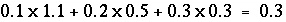
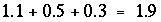

This keyword data block is used if two or more aqueous solutions are to be mixed together. Normally, the mixing occurs as part of the batch-reaction calculation, but mixing may be applied during advection calculations also.
Line 0: MIX 2 Mixing solutions 5, 6, and 7. Line 1a: 5 1.1 Line 1b: 6 0.5 Line 1c: 7 0.3
Line 0: MIX [ number ] [ description ]
MIX is the keyword for the data block.
number --Positive number to designate the following mixing parameters. Default is 1.
description --Optional comment that describes the mixture.
Line 1: solution number, mixing fraction
solution number --Defines a solution to be part of the mixture.
mixing fraction --Decimal number which is multiplied times the moles of each element in the specified solution, to be summed with any other solutions included in the mixture. Mixing fractions may be greater than 1.0.
In mixing, each solution is multiplied by its mixing fraction and a new solution is calculated by summing over all of the fractional solutions. In the example data block, if the moles of sodium in solutions 5, 6, and 7 were 0.1, 0.2, and 0.3, the moles of sodium in the mixture would be  . The moles of all elements are multiplied by the solution's mixing fraction, including hydrogen and oxygen. Thus, the mass of water is effectively multiplied by the same fraction. In the example data block, if all solutions have 1 kg of water, the total mass of water in the mixture is  kg and the concentration of sodium would be approximately 0.16 mol/kgw (0.3/1.9). The charge imbalance of each solution is multiplied by the mixing fraction and all the imbalances are then summed to calculate the charge imbalance of the mixture. The temperature of the mixture is approximated by multiplying each solution temperature by its mixing fraction, summing these numbers, and dividing by the sum of the mixing fractions. Other intensive properties of the mixture are calculated in the same way as temperature. This approach for calculating the temperature of mixtures is an approximation because enthalpies of reaction are ignored. For example, heat generated by mixing a strong acid with a strong base is not considered.
This formulation of mixing can be used to approximate constant volume processes if the sum of the mixing fractions is 1.0 and all of the solutions have the same mass of water. The calculations are only approximate in terms of mixing volumes because the summation is made in terms of moles (or mass) and no consideration is given to the partial molar volumes of solutes. Similarly, the formulation for mixing can approximate processes with varying volume, for example, a titration.
When multiple batch-reaction steps are defined in KINETICS, REACTION, or REACTION_TEMPERATURE, and if INCREMENTAL_REACTIONS is false (cumulative reaction steps), then each batch-reaction step uses the same mixing factors; if INCREMENTAL_REACTIONS is true (incremental reaction steps), then the mixing fractions are applied during the first batch-reaction step only.
INCREMENTAL_REACTIONS, SOLUTION, SAVE solution, USE solution, and USE mix.